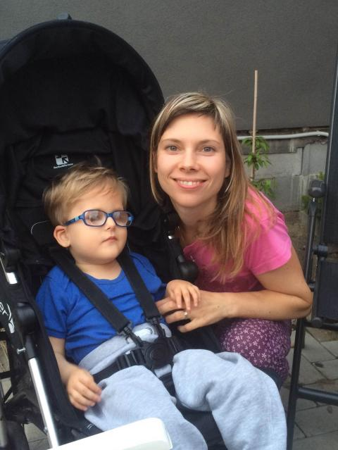

Kubík
Kuba - nar. v roce 2013, diagnóza Warburg micro syndrom. Kuba má centrální hypotonii, centrální zrakové postižení, pohybově i mentálně je na úrovni tříměsíčního dítěte.
K paní Mgr. Markétě Mesany Klemové jsme se dostali až v necelém Kubově roce. Předtím jsme chodili k jiným fyzioterapeutům, ale až u paní Mgr. Mesany Klemové jsme začali být opravdu spokojení.
Díky pravidelnému cvičení Vojtovy metody pod jejím dohledem se Kuba postupně zlepšuje. Úplně mu vymizel nystagmus. Dokáže kousat a ukusovat tužší stravu a pít tekutiny z kelímku. Zlepšuje se mu držení hlavy a úchop rukou. V poloze na zádech i na břiše se začíná pohybovat směrem vpřed (zatím nepravidelně a velice pomalu).
Paní Mgr. Mesany Klemová má velice profesionální, individuální a lidský přístup k našemu synovi i k nám. Dokáže vysvětlit postup, mechanismus a výsledný účinek Vojtovy terapie - jednoduše proč a jak máme cvičit daný cvik a co všechno tím cvikem můžeme ovlivnit. Umí dobře namotivovat a pochválit, ale i okomentovat a opravit chyby při cvičení. Dokáže být v určitých případech shovívavá i k jiným terapeutickým cvikům, pokud nejsou úplně v rozporu s Vojtovou terapií. I v takových situacích zase vždy poradí a vysvětlí, proč jinou metodu ano nebo ne.
Na každé cvičení se díky milé a šikovné paní terapeutce těšíme. Je vidět, že pomáhat lidem ji opravdu baví. A pro nás už není cvičení Vojtovy metody stresující. Víme, že je to ta nejlepší pomoc pro našeho těžce postiženého syna.